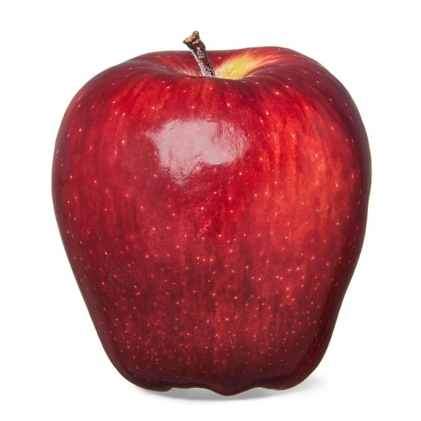

Manzana
La manzana es un fruto acorazonado, de color rojo con tonos verdes, consistente y jugosa. Al igual que el melocotón, esta pertenece a la familia Rosaceae. Es una especie de hábito arbóreo, de tipo perenne, que también necesita de horas específicas de frío para que la planta pueda completar su ciclo productivo